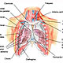
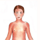
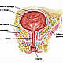

OncoGuía - Tratamientos contra el cáncer
-
 Adenoma de HipófisisGlándula situada en la silla turca
Adenoma de HipófisisGlándula situada en la silla turca -
 ColonLa última porción del aparato digestivo
ColonLa última porción del aparato digestivo -
 Cuello Uterino/Cérvixparte más inferior del aparato rep. femenino
Cuello Uterino/Cérvixparte más inferior del aparato rep. femenino -
 Endometrio/úteroórgano hueco, situado en la pelvis.
Endometrio/úteroórgano hueco, situado en la pelvis. -
 Esófagotubo hueco que transporta los alimentos
Esófagotubo hueco que transporta los alimentos -
 Estómagositúado en la parte alta del abdomen
Estómagositúado en la parte alta del abdomen -
 GliomasTumores cerebrales que proceden de las células gliales
GliomasTumores cerebrales que proceden de las células gliales -
 MamaGlándula destinada a la producción de leche
MamaGlándula destinada a la producción de leche -
 Médula Espinalel tejido nervioso más extenso del cuerpo
Médula Espinalel tejido nervioso más extenso del cuerpo -
 Meduloblastomatumores malignos en la fosa posterior del cerebro
Meduloblastomatumores malignos en la fosa posterior del cerebro -
 MelanomaCrecimiento de los melanocitos
MelanomaCrecimiento de los melanocitos -
 MeningiomasTumor cerebral usualmente benigno
MeningiomasTumor cerebral usualmente benigno -
 Metástasis CerebralesLesiones tumorales situadas en el cerebro y que proceden de otros tumores
Metástasis CerebralesLesiones tumorales situadas en el cerebro y que proceden de otros tumores -
 No MelanomaEl tumor más frecuente del ser humano
No MelanomaEl tumor más frecuente del ser humano -
 PáncreasGlándula que participa en el proceso de la digestión
PáncreasGlándula que participa en el proceso de la digestión -
 PróstataGlándula sexual exclusiva de los varones
PróstataGlándula sexual exclusiva de los varones -

PulmónDos pulmones (derecho e izquierdo) localizados en el tórax.
-
 RectoLa última porción del aparato digestivo
RectoLa última porción del aparato digestivo -

Tumores InfantilesCada año se diagnostican 1.200 casos nuevos de tumores infantiles
-

Vejigaórgano situado en la parte baja de la pelvis
Tumores infantiles
Tratamiento
El tratamiento del cáncer en los niños debe realizarse en Unidades Pediátricas Oncológicas, constituidas por un equipo multidisciplinar con experiencia en el tratamiento de esta enfermedad. En general, el tratamiento depende del tipo de tumor, de su extensión, de la agresividad y por supuesto, la edad del niño juega un papel fundamental en la decisión terapéutica.
El objetivo principal del tratamiento del cáncer pediátrico es la curación, con prioridad absoluta sobre cualquier efecto secundario, incluyendo los riesgos a largo plazo.
En general puede incluir:
- CIRUGÍA: en aquellos niños que presentan tumores sólidos y localizados, en los que no han aparecido metástasis (diseminación a otros órganos), la cirugía es una herramienta eficaz para combatir esta enfermedad, generalmente combinada con quimioterapia y/o tratamiento con radiaciones.
- QUIMIOTERAPIA: es la administración de medicamentos por diversas vías (oral, intravenosa, intratecal…) de modo que penetren en el torrente sanguíneo y puedan destruir las células tumorales en todas las partes del cuerpo donde se encuentran. En la mayor parte de los casos, el tratamiento con quimioterapia sigue rigurosamente los protocolos internacionales de tratamiento.
- La periodicidad, la vía de administración, el tipo de fármaco empleado y la duración de la quimioterapia, dependen del tipo de cáncer que padezca el niño y de su respuesta al tratamiento. La quimioterapia, presenta efectos secundarios más o menos severos que pueden aparecer en un periodo de tiempo corto o después de meses o incluso años. Los síntomas agudos más frecuentes son náuseas, vómitos, alopecia (pérdida del pelo), anemia y disminución de las células de la defensa con mayor riesgo de infecciones. Los efectos crónicos de la quimioterapia en los niños son muy variados e incluyen alteraciones en el crecimiento, lesiones en órganos internos como el hígado o el corazón, infertilidad por lesión de las gónadas e incremento del riesgo de padecer en el futuro otros cánceres. En algunos casos se combina con el transplante de médula ósea que favorece el crecimiento de nuevas células productoras de células sanguíneas sanas.
- TRATAMIENTO CON RADIACIONES: la radiación es capaz de destruir y dañar las células tumorales, y en niños suele utilizarse combinada con la quimioterapia y/o la cirugía. Es un tratamiento localizado y generalmente ambulatorio que se administra en forma de sesiones diarias, 5 veces por semana hasta su finalización.
- La radioterapia en niños, con técnicas tradicionales, suele tener efectos secundarios severos a pesar de afectar exclusivamente a la zona irradiada. Estos efectos secundarios son variables dependiendo de la zona que reciba la radiación y pueden ser a corto plazo (inflamación y enrojecimiento de la piel, náuseas, somnolencia, disminución de recuento de células sanguíneas…) y a largo plazo, destacando el riesgo de aparición de otros cánceres en el futuro.
- Sin embargo, los tratamientos con radiaciones han evolucionado muy rápidamente en los últimos años gracias al desarrollo tecnológico, lo que permite actualmente la administración de este tipo de tratamientos de forma más precisa y segura, con mayor eficacia y con menos efectos secundarios, que han permitido incluso, poder administrar este tratamiento a pacientes de muy corta edad. Así, por ejemplo, existen grandes avances tecnológicos en tratamiento con radiaciones en pacientes pediátricos como:
- Tomoterapia: es la técnica mas apropiada de Radioterapia en el tratamiento de niños ya que consigue una buena dosis terapéutica sobre el tumor y preserva el tejido circundante normal por lo que el riesgo de desarrollar toxicidad es menor.
- Ofrece la posibilidad de tratar tumores en niños que, sin esta técnica, no se podrían tratar. Muchos órganos o tejidos en los niños están en fase de crecimiento, sobre todo, los huesos. La Radioterapia convencional puede afectar a estas zonas y dar lugar a alteraciones posteriores. Con Tomoterapia, al utilizar una forma de radiación que se aplica mediante miles de haces muy finos que convergen en el tumor, se evitan las trayectorias que afectarían a esos órganos más críticos.
- Es el procedimiento más avanzado con alta tecnología que permite administrar un tratamiento de radioterapia helicoidal, altamente adaptado a cada paciente, por lo que consigue reducir al máximo la dosis de radiación que llegan a los órganos sanos que rodean el tumor. La Tomoterapia incluye un sistema de TAC (scanner) que se realiza diariamente para conocer la posición exacta del lecho quirúrgico o del tumor, de los órganos sanos y del paciente. Con este TAC, se ajusta la posición de tratamiento y minimiza el riesgo de error de colocación. Los efectos secundarios derivados de este tratamiento son mínimos, por lo que la calidad de vida del paciente, durante y tras el tratamiento es excelente.
Pronóstico
Depende del tipo de tumor y del momento en el que se diagnostica la enfermedad. Por regla general, aquellos tumores diagnosticados en etapas más tempranas tienen un mejor pronóstico. La localización del tumor también se relaciona con el pronóstico, teniendo una evolución más favorable aquellos localizados en las extremidades comparados con los que se localizan en regiones centrales (cabeza, cadera, etc.). La presentación del tumor al diagnóstico también es un factor pronóstico, teniendo mejor pronóstico aquellos tumores localizados en una sola región frente aquellos que se encuentran en varias regiones desde el inicio.
Aspecto Pico-oncológico
Durante la última década, gracias a los avances en las técnicas diagnósticas y alternativas terapéuticas, la supervivencia de los niños y adolescentes con cáncer ha aumentado notablemente. De hecho, el tratamiento de esta enfermedad constituye uno de los éxitos terapéuticos más importantes de la medicina actual.
Pero indudablemente, los niños y especialmente los padres, viven esta experiencia con un gran dolor, incertidumbre y miedo. Toda la familia necesitará hacer frente a esta nueva situación inesperada e imprevisible y que resulta especialmente impactante.
Los padres tienen que aprender a convivir con las necesidades de cuidado del niño enfermo, atender las necesidades de los otros hijos y familiares, el trabajo, las tareas diarias y los ratos de esparcimiento para normalizar la vida familiar y social.
Una buena comunicación con el médico para informarse sobre la enfermedad y los tratamientos, una comunicación abierta y adaptada a las necesidades del niño y adolescente con cáncer así como un buen apoyo familiar y social permiten mejorar la adaptación y afrontamiento de la enfermedad.
Recibir apoyo profesional es importante para manejar el estrés asociado al diagnóstico y tratamiento y facilitar la adaptación del niño a la enfermedad. Actualmente, las políticas psicosociales permiten una reincorporación plena del niño y adolescente con cáncer a su vida escolar, familiar y social.
Si necesita más información sobre cómo afrontar un diagnóstico de un tumor infantil en su hijo, le ofrecemos unas pautas que le podrán ayudar a asumir y a adaptarse a la nueva situación. Puede consultarlas en el apartado de Apoyo Psicológico.
Asimismo, si quiere conocer las experiencias y testimonios de personas que han superado esta enfermedad puede consultar en Curados de cáncer.